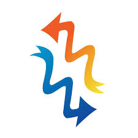
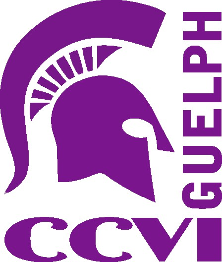
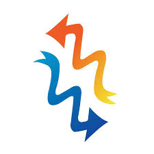
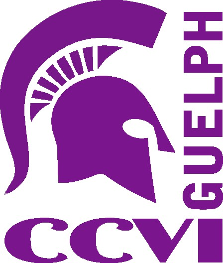
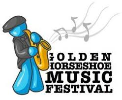
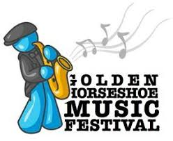

Audioscope
Audioscope creates a visual and audio representation of sound waves, allowing the user to manually add frequencies or choose a chord preset that allows multiple harmonious frequencies to be displayed at the same time. This program provides an effective way for music and physics students to understand how sound waves interact, and is a useful learning tool.


 



 
